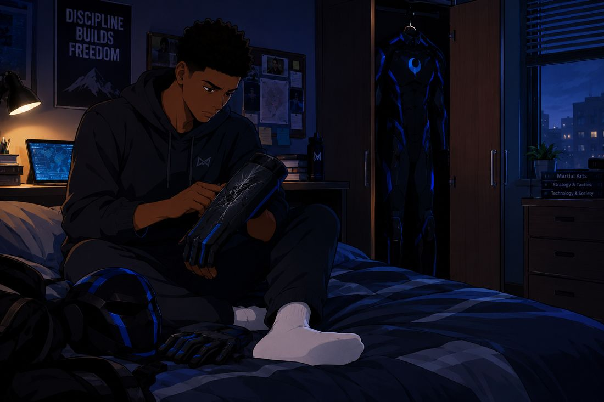
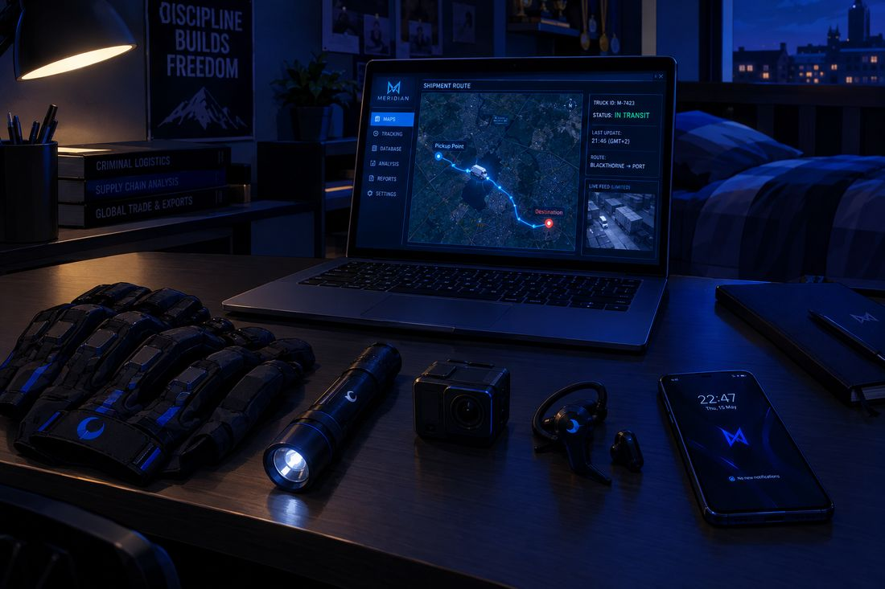
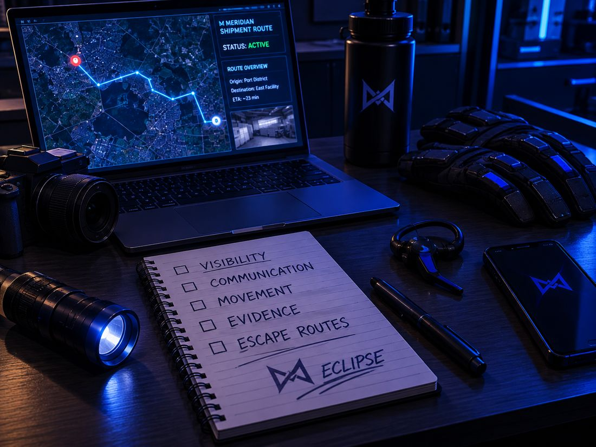
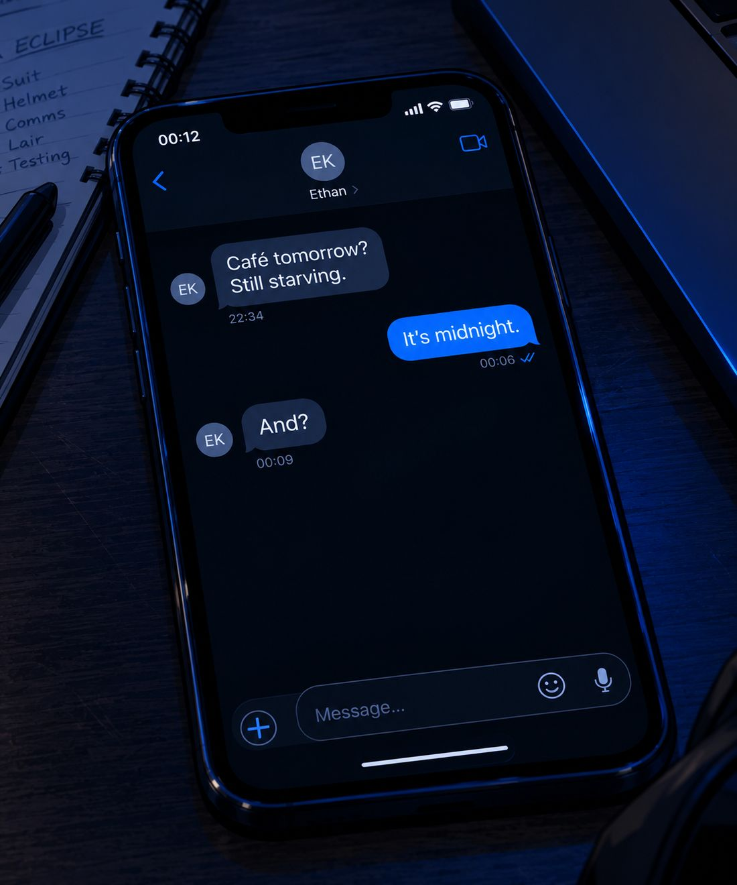
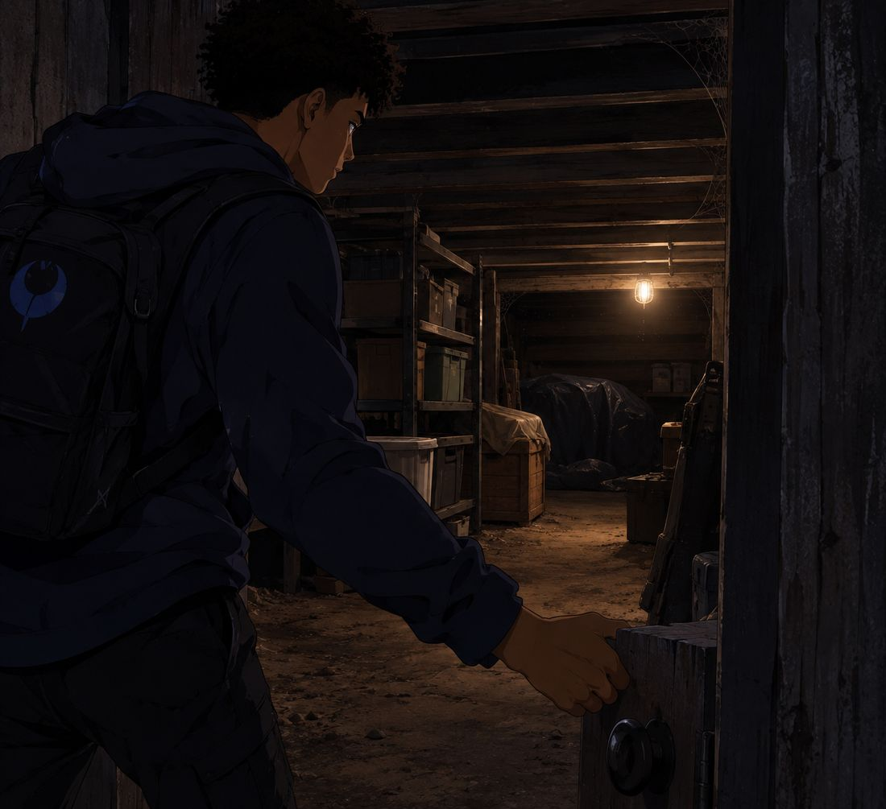
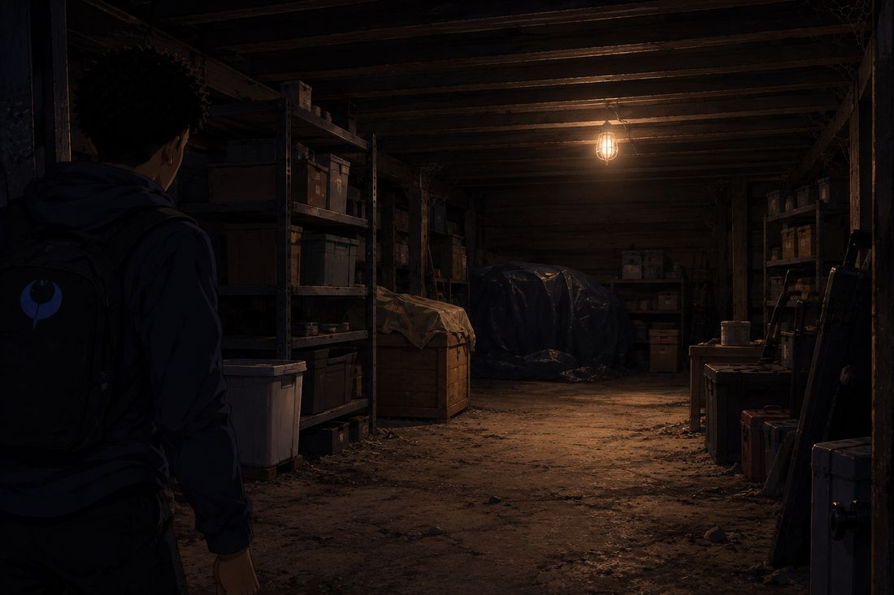
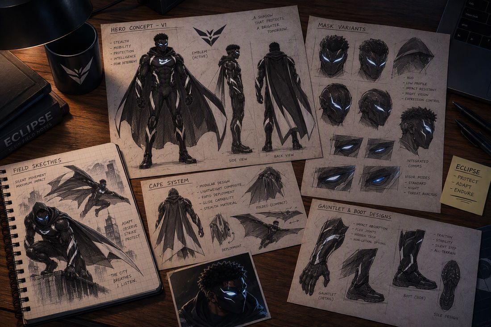
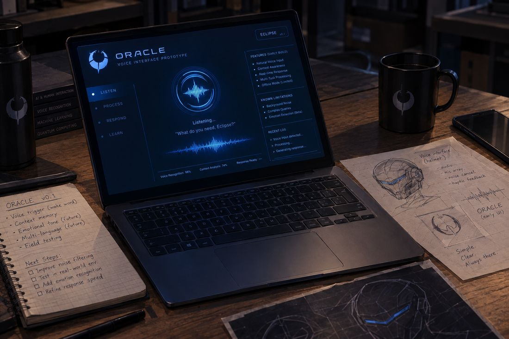
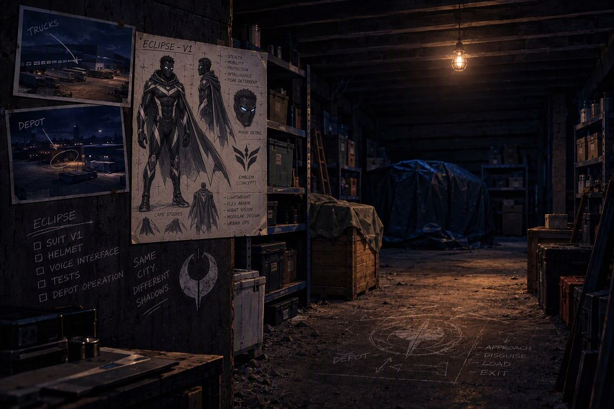
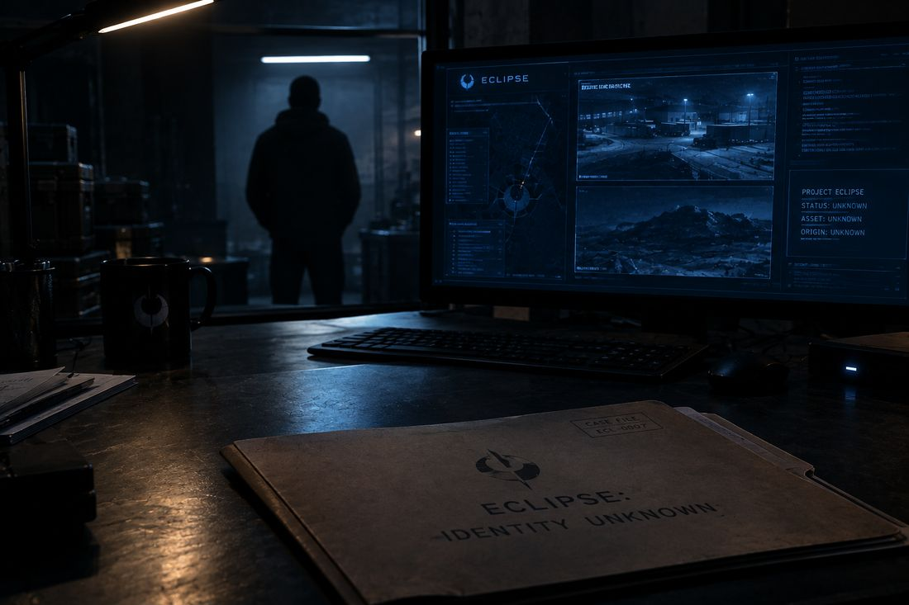

ECLIPSE
Volume 1 · Part 6 · Beneath the Surface
Prologue
Debrief
Late night · Wandile’s bedroom
The suit hangs from the wardrobe door like a very expensive question.
It is past midnight, and Wandile’s house has the particular hush of a place that has recently been tiptoed through. He sits on the edge of his bed in socks and a faded university hoodie, which is how he can tell he is back to being a student. An hour ago he was a shadow on a public walkway. It is remarkable how quickly an hour ago stops feeling real.
He turns a forearm guard under the desk lamp. A web of fine cracks runs across the blue trim, gravel’s autograph.

“Okay,” he tells the room. He runs a thumb over the damage. “That could’ve gone worse.”
The room says nothing.
“Much worse, actually.”
He sets the gloves on the desk beside the flashlight, the camera, the earpiece and his phone and looks at them for a while. The entire arsenal, in a neat little row. It looks like the saddest heist movie ever made.

His laptop is still open on the route he traced and the depot he watched. He sits down and flips to a fresh page in his notebook, where five headings wait in his own handwriting: VISIBILITY. COMMUNICATION. MOVEMENT. EVIDENCE. ESCAPE ROUTES. He hasn’t written anything under them yet. He doesn’t need to. He knows every one of them has a hole in it.

“One truck,” he says. “One depot. A whole lot of sealed crates. And absolutely no idea what’s inside them.”
He enlarges one of the photographs and studies it with the tired respect of a man reading his own bad review.
“Brilliant work, Shaw. You successfully followed a truck.”
He leans back until the chair complains. And now what? There is no proper comms, no reliable way to review what he saw, and if anything had gone wrong tonight, he would have been improvising. Which, if he is honest, has been his entire strategy so far.
He looks around the room as if it might have ideas: the bed, the wardrobe, the desk, the wall of martial arts medals gleaming in the lamplight. All of it very ordinary. All of it very much a bedroom.
“I can’t keep doing this from my bedroom,” he says.
He said exactly that at the end of the last night, to a notebook. The notebook didn’t have any ideas either.
His phone buzzes against the duvet.
Ethan: Café tomorrow? Still starving.
It’s midnight, Wandile types.
And?

“Unbelievable,” he says, and tosses the phone onto the bed. Ethan treats this house like he pays rent. The worst part is that Wandile has never once corrected him.
The smile fades, though, and something steadier takes its place. He opens a blank document and types a title: ECLIPSE — REQUIRED UPGRADES.
Secure workspace. Improved suit protection. Mask analysis. Reliable communications. Evidence storage.
He reads the list back. It is a good list. It is also a very expensive list. He adds one more line.
And possibly a less expensive hobby.
Chapter 1
A Conditional Greeting
Morning arrives the way it always does after a late night: rudely, and with sunlight.
Wandile is dressed for university by the time it finds him. The laptop is closed. The suit is hidden behind ordinary clothes in the wardrobe, and he checks twice that the door is shut before he picks up his bag, like a man who has learned that Ethan opens things.
His phone rings. He doesn’t need to look at the screen.
“Ethan, if you’re calling about food—“
“First of all, good morning to you too.” Ethan’s voice has the unearned confidence of someone who slept eight hours.
“It’s a conditional greeting.”
“Whatever. Are you coming to campus?”
“I’m literally putting on my shoes.”
“Good. Olivia says we’re all meeting at the café after lectures.”
Wandile pauses with one shoe on. “All of us?”
“No, Wandile. Just you, me, Olivia, Charlotte and the seventeen strangers she apparently invited.”
“You woke up irritating.”
“And you woke up single. We all have challenges.”
“Goodbye, Ethan.”
He hangs up, shaking his head, and discovers he is smiling anyway. That is the problem with Ethan. He is impossible to stay annoyed with for longer than a sentence.
By the time Wandile reaches the brick courtyard at Blackthorne University, Ethan has materialised at his elbow and is already working on him. Students stream past with coffees and the look of people who have made peace with Mondays. A lecturer hurries by carrying a stack of papers that appears to be winning.
“You know, you could try looking happy to be here,” Ethan says.
“I’m at university before ten in the morning. Let’s not ask for miracles.”
“You chose this life.”
“I chose the degree. Nobody warned me about you.”
Ethan squints at him. “You look unusually focused, by the way. People who look like that are usually planning a hostile takeover.”
“Maybe your lectures are easier.”
“There he is. I was worried you’d become a responsible adult.”
Olivia and Charlotte reach them from the steps, and the temperature of the conversation rises by one friendly degree.
“Are you two arguing already?” Charlotte asks.
“He’s been like this since I called,” says Ethan.
“So, a normal morning,” says Olivia.
“Exactly,” says Wandile.
Olivia’s eyes drop to the cup in his hand. “Is that your breakfast?”
It is a joke with a long history. It somehow still works.
“It’s coffee.”
“That wasn’t my question.”
“It’s a complicated relationship.”
“Between you and breakfast?” Charlotte asks.
“It’s been a difficult year.”
Olivia laughs, properly, the kind of laugh she tries to hold back and never manages. “You’re impossible.”
“So I’ve heard.”
Their eyes meet for a second longer than the joke needs. Olivia is the first to look away, turning toward the lecture building with a smile she pretends is about something else.
“Come on. We’re going to be late.”
Wandile follows, and in his pocket his phone vibrates once. A notification slides across the lock screen: PERSONAL NOTE — MERIDIAN SHIPMENT ROUTE.
He locks it without opening it and keeps walking. Three friends are laughing around him, and not one of them looks down.
Chapter 2
The Announcement
The university café smells of burnt sugar and someone else’s deadline.
The four of them have claimed the usual table, which is the one by the window with the wobbly leg that Ethan insists is a feature. Ethan has a sandwich and a plan to steal one of Charlotte’s chips. Charlotte, without looking up from her notebook, slides the plate out of his reach.
“That was unnecessary,” he says.
“You have your own food.”
“Yours looks more interesting.”
“It’s the same food.”
“But yours has mystery.”
Wandile checks a message on his phone and slips it back into his pocket. It is a small, practised movement, and Olivia, who is supposedly scrolling through her laptop, sees every part of it.
“You’re doing that thing again.”
“What thing?”
“The one where you’re physically here, but your brain has gone somewhere else.”
“My brain is sitting right here.”
“Then tell it to contribute to the conversation.”
“I was listening.”
“What did I just say?” Charlotte asks, pen hovering.
Wandile looks at her. The honest answer is nothing I caught. He goes for a calculated risk.
“Something about Ethan being annoying?”
“That was five minutes ago.”
“In his defence,” says Ethan, “it’s a recurring topic.”
They laugh, and Olivia keeps watching Wandile a moment longer than the joke needs. She likes that he can be serious one second and ridiculous the next. She has no idea what he does at night, and nothing he says gives her a reason to wonder.
Ethan, meanwhile, has moved on to philosophy. He delivers a passionate speech about why every university assignment sounds like it was written by someone who hates students, and he gestures with the sandwich for emphasis.
“Because someone who loved students would’ve given you fewer of them,” Wandile says.
“Thank you. Finally, someone understands me.”
“You haven’t even started yours,” Olivia points out.
“I understand the emotional journey.”
“Your emotional journey,” says Charlotte, closing her notebook, “is going to end in a failed grade.”
Olivia puts her drink down with the air of someone about to make an announcement, and everyone at the table has the sense to stop talking.
“Friday night,” she says. “We should all hang out at Wandile’s place.”
Wandile very nearly chokes on his coffee. “My place?”
“Yes, your place. You have an actual house, and somehow we’ve barely spent any time there. It’s been ages since we did something that wasn’t university-related.”
“I support this proposal,” says Ethan, instantly.
“You support anything involving free food,” says Charlotte.
“I support friendship. Free food is simply a wonderful bonus.”
“Movies, takeaway, games,” Olivia continues. “Maybe everyone stays over, if Wandile’s okay with it.”
“I live in a house, Ethan. I’m not running a hotel.”
“A house with spare rooms.”
“That’s not the point.”
Olivia turns to him, and her voice softens. “Only if you’re comfortable with it.”
Wandile thinks about the spare rooms in his house. Then he thinks, more carefully, about the space beneath it. Four people. One night. Ethan.
He has seen worse odds. Possibly.
“Yeah. Sure. Friday night?”
“Excellent,” says Ethan. “I call the best sleeping spot.”
“You don’t even know where the sleeping spots are,” says Charlotte.
“That’s why I’m calling it early. And I’ll bring snacks.”
“Snacks you haven’t already eaten.”
“I don’t appreciate the assumptions being made about me.”
“They’re based on evidence,” Wandile says.
The whole table erupts, and for a moment he is just a guy laughing in a café, with a wobbly table and good friends. Olivia glances at him again, still smiling.
“Friday, then.”
“Friday.”
For now, his ordinary life is exactly where it should be.
Unfortunately, his other life is waiting for him at home.
Chapter 3
Beneath the House
Wandile gets home in the late afternoon, drops his bag in the hall and grabs a bottle of water from the kitchen. His thoughts are running a few steps ahead of him, the way they do when a problem has just doubled in size.
“Friday night,” he mutters, wandering through the house. “Four people. Food everywhere. Ethan opening every cupboard in sight.”
He stops at a door at the end of the downstairs hallway, the kind of door that people in every house forget they own.
“And my entire superhero operation is currently inside one wardrobe.”
He opens it. A breath of cool, dusty air rises to meet him, smelling of cardboard and forgotten years.

Beyond the door, a staircase leads down to a storage space under the house: unfinished, cluttered with old boxes and shelving and furniture nobody remembers buying. Wandile steps down and finds the light switch, and a single bulb flickers on with the enthusiasm of something that has been asleep for a decade.
“Huh.”
He walks slowly through the room, and it keeps being bigger than he expects. Much bigger.

“How have I never properly looked down here?”
He measures a stretch of floor in footsteps and begins to see things that aren’t there yet. A main workstation by that wall. Equipment storage along the other. Screens here. A suit station in the far corner, with proper lighting, like a very tiny museum.
“Private. Separate from the bedrooms. Not somewhere my friends would casually wander into.”
He photographs the room from three angles. Then he looks up at the ceiling, at the beams and the pipes and the faintly suspicious patch of damp, and his excitement slows down to meet his common sense.
“And I should probably check whether this place is structurally suitable before I turn it into something ridiculous.”
On his phone he opens a note and types a heading in capitals: PROJECT: UNDERGROUND WORKSPACE.
Under it goes the list. Inspect the space and confirm it can safely be used. Plan the layout. Install appropriate security. Set up power and ventilation. Build the workstation. Establish equipment storage.
He adds a last line, because he is a careful person: INSPECTION FIRST. STRUCTURE, ELECTRICAL, VENTILATION, FIRE SAFETY.
“No point building a secret workspace if the ceiling decides to join me.”
A small smile creeps across his face.
“Now we’re getting somewhere.”
It isn’t a base. It isn’t even close. It is dust, a flickering bulb and a very optimistic notes app. But for the first time since the night began, it is possible.
Chapter 4
Oracle
Back in his bedroom, the desk has disappeared under paper.
One drawing shows a refined mask. Another shows a suit with reinforced forearms and flexible protective panels. Wandile holds his current mask beside the sketch and compares them with the expression of a man comparing a school photo to his passport.

“I don’t need to look intimidating,” he says. He considers the mask. “Okay. Maybe a little intimidating.”
He opens a new document and builds the requirements one line at a time. A clear field of vision. Low-light assistance. Visual identification support. A navigation display. A secure link to the earpiece. And a manual override, in case the electronics decide to have opinions.
He circles that last line twice. If the system fails, he still has to function.
“And I need something that can analyse the evidence without pretending it knows things it doesn’t.”
He looks at the laptop. It looks back, in the blank way of laptops.
“Something that can help me think.”
He sketches a rough interface: a map in the middle, a column of evidence files down one side, a communications panel along the bottom. Then he types a heading and stares at it.
AI ASSISTANT: NAME PENDING.
By evening the bedroom lights are low and the laptop is the only thing glowing. Over the past few hours he has stitched together a basic voice assistant from software and hardware he already had. It isn’t connected to a lair or a mask. It is barely connected to itself.

“Testing microphone input.” He taps a key. “System, respond to a voice query.”
A flat, neutral voice answers from the speakers, as flat as a spreadsheet.
“Voice input detected. Please provide a command.”
“Identify the primary objective of this system.”
“Objective not defined.”
“Helpful.”
He tries again, typing this time. Primary objective: assist with organising research, analysing available evidence, mapping known locations and managing communications.
“Objective updated.”
“Better.”
He feeds it a sample Meridian shipment record and asks it to compare the dates with the rest of his files. The cursor blinks a few times, thinking.
“Two dates overlap. The available records do not establish what was transported.”
Wandile nods slowly, and something in his chest unclenches. “Good. At least you’re not making things up.”
He asks it to sort the documents by location and by connection to Meridian. It does, and it flags several entries as unverified. He tells it to keep unverified information separate from everything else, always. It saves that as a preference, as though it understood.
He sits back and looks at the screen. A name is the one thing a thing like this needs.
“You need a name,” he says.
He turns over a few options, glances at his notes, and settles on one that has been waiting in the back of his head all night.
“Oracle.”
A short pause.
“Would you like to set Oracle as the system name?”
“Yes.”
“System name updated: Oracle.”
“Welcome aboard, Oracle.”
“Acknowledged.”
“You could sound a little more excited.”
“Would you prefer a different vocal response?”
“No. That was a joke.”
“Understood. Would you like me to record that as your official assessment?”
Wandile points a finger at the screen. “Don’t start.”
“I have not started anything.”
“And yet somehow I regret this already.”
“That reaction has been noted.”
He laughs under his breath and turns back to work, and the laugh surprises him. When was the last time he had company in this room that didn’t need feeding?
“This is going to be a long relationship.”
The first version of Oracle is born. It can organise information, compare documents, help map known locations and support communications. It cannot magically access every camera, identify every face or know things that were never written down.
Wandile will still have to do the thinking.
And the fighting.
Chapter 5
A Better Plan
The storage space looks different with the lights on and a plan in hand. It looks, Wandile decides, like a very dusty promise.
He sits on the floor with his notebook, his laptop balanced on a temporary table made from two boxes and optimism.
“Oracle, display the workspace plan.”
“The proposed layout includes a workstation, equipment storage, an evidence-analysis area and a secure suit compartment.”
“Anything I’m missing?”
“The space requires inspection before renovation. Electrical work, ventilation, fire safety and structural suitability must be addressed.”
“Fair enough. Anything else?”
“Your current equipment remains vulnerable to damage if stored without suitable protection.”
“I know.”
“Your current mask does not include the analysis interface you described.”
“I know.”
“Your current suit has limited protective reinforcement.”
“Oracle.”
“Yes?”
“Are you helping me, or writing a report on how badly I’ve prepared?”
“Both objectives may be achieved simultaneously.”
Wandile stares at the laptop for a long moment. “You’ve been operational for less than an hour.”
“Correct.”
“And somehow you’re already annoying.”
“I can reduce the frequency of my responses.”
“Don’t. Just be less smug.”
“I do not possess the capacity to feel smug.”
“That’s exactly what a smug computer would say.”
He laughs, and then, because this is how his best ideas always begin, he gets serious.
“Listen. Nothing gets used in the field just because it worked once on a desk. Every feature gets tested. If something fails, I need to know before it matters.”
“A phased testing process is recommended.”
So he builds one. In the notebook, in neat block letters, he writes four lines.
PHASE ONE: Research and planning.
PHASE TWO: Workspace inspection and preparation.
PHASE THREE: Prototype equipment and controlled testing.
PHASE FOUR: Field testing, once the systems are reliable.
He looks at the list for a long time. It is the least exciting thing he has ever written, and he is oddly proud of it.
“No shortcuts.”
“That should reduce avoidable errors.”
“You really need to work on your motivational speeches.”
“I can generate a more enthusiastic version.”
“Absolutely not.”
He closes the laptop and looks around the room one more time, and it doesn’t feel like a mess anymore.
“This could actually work.”
That night, upstairs, he lays the current suit across his bed and finds the forearm guard from the first outing. The cracks are still there, a fine pale reminder. He tests the flexibility of the material and compares it to his sketches. He tries a different arrangement for the protective panels, frowns, and tries another.
“More protection without losing movement,” he says. “The gloves need work too. Better grip, but nothing that makes my hands clumsy.” He turns to the mask design. “And the display has to be readable without blocking my vision.”
“Your current design includes six separate information panels,” says Oracle, through the earpiece. “That may obstruct your field of view.”
“So we simplify it.”
He erases element after element, muttering as he goes. “A map when I need a map. Warnings when something needs my attention. Analysis when I ask for it. Everything else stays out of the way.” He draws a cleaner visor, then looks at it. “Too much. Too fragile. I don’t need a computer shouting the entire internet into my face while I’m trying to avoid getting punched.”
“That would be inefficient.”
“I’m glad we’re finally on the same page.”
He sets the sketches beside the suit and steps back.
This is not the finished Eclipse. It is the beginning of something more capable.
Chapter 6
The World Doesn’t Stop
The next day the world, rudely, continues.
Wandile is in a lecture hall, taking notes with the diligence of a man who has absolutely not been dreaming about mask visors, when his phone buzzes once against his leg. Olivia.
Don’t forget Friday. Ethan has already sent me a list of snacks.
I’m afraid to ask how long it is, he types back.
Three pages.
That’s not a snack list. That’s a procurement document.
Two rows away, Olivia laughs quietly into her phone. The lecturer, who has radar for this sort of thing, looks up.
“Something you’d like to share with the class?”
“No, sorry,” says Olivia.
Wandile keeps his eyes on his notes and fights his smile with every muscle in his face.
Afterwards she catches up with him in the courtyard, where the afternoon is warm and everyone seems to be moving slowly on purpose.
“You’re coming, right?”
“To my own house?”
“You could still change your mind.”
“And miss Ethan eating all the snacks before the movie starts?”
“Exactly.”
“Wouldn’t dream of it.”
They walk side by side for a while without saying anything. It is surprisingly comfortable. Then her tone changes, just slightly.
“You know, you don’t have to do everything yourself.”
He glances at her. “What makes you say that?”
“You always seem to have something on your mind. Assignments, projects, plans. You look like you’re trying to solve five problems before lunch.”
“Only five?”
She laughs. “See? That’s what I mean.”
“I like having things figured out.”
“There’s a difference between having a plan and organising yourself into forgetting to have a life.”
She says it lightly. It lands on him like a dropped textbook, because she has no idea how close to home it is.
“Is this your way of telling me to relax?”
“It’s my way of telling you Friday is supposed to be fun. You’re not allowed to turn it into a project.”
“What if I make a schedule?”
“I’ll throw it away.”
“What if it’s colour-coded?”
“I’ll throw it away in colour-coded pieces.”
He laughs, properly. “Fine. No schedule.”
“Good.”
At the bottom of the steps she hesitates, as though she has remembered something and isn’t sure how to say it.
“I’m glad we’re doing this, by the way.”
“Friday?”
“Yeah. All of us together.”
“Me too.”
She nudges his arm lightly and heads off toward Charlotte. Wandile watches her go, a little longer than he realises.
“Oracle,” he says, out loud, out of pure habit, and then freezes.
Olivia turns back. “What?”
“Nothing. I was thinking out loud.”
“You do that a lot.”
“It’s a very intellectual habit.”
“Of course it is.”
She smiles and walks away. Wandile lets out a long breath he has been holding since the first syllable.
“That was close.”
His phone stays silent in his pocket. His secret is still safe. For now.
Chapter 7
Meridian
High above the city, Meridian’s glass tower catches the daylight like something that has never once been afraid of the dark.
In a spacious executive office, Adrian leans against the window with his hands in his pockets while a senior logistics manager reports from a respectful distance, tablet in hand.
“The shipment records are being reviewed. The next export schedule remains unchanged.”
“And the previous route?”
“The truck completed its scheduled movement.”
“Any disruption?”
“Nothing significant has been reported.”
Adrian considers the answer the way some men consider a menu, already knowing what he will choose. “Continue the scheduled operations. I don’t want delays caused by unnecessary speculation.”
“Understood.”
The manager leaves. Adrian turns back to the city.
He has no reason to suspect Wandile, and he has not connected a masked figure to any particular person. Elsewhere in the organisation, the people who once backed away from Wandile have gone back to their own work. For now, they consider the matter closed.
The sealed shipments keep moving. The paperwork keeps getting reconciled. The lights keep glowing.
And somewhere beyond Meridian’s immediate reach, the consequences of those shipments are beginning to attract attention.
The Meridian operation continues.
And Eclipse is only beginning to understand it.
Chapter 8
The First Step
Upstairs, Wandile’s phone will not stop.
Ethan: Friday. Food. Movies. I expect an answer on the menu.
Charlotte: Do not let Ethan choose everything.
Olivia: Looking forward to Friday 😊
Wandile smiles and answers the group chat. Everyone can make suggestions. Nobody gets complete control.
Ethan replies almost instantly. This is discrimination against people with excellent taste.
You put extra cheese on everything, Charlotte writes.
Exactly. Excellent taste.
He puts the phone down, still smiling. In his earpiece, Oracle manages to clear its throat in the way only an assistant without a throat can.
“Your current schedule contains competing priorities.”
“I know.”
“Would you like assistance organising them?”
Wandile looks at his university timetable, then at the Eclipse plan, then at the timetable again.
“Yeah. Help me fit the work around my classes. Friday stays free.”
“Both objectives may be achieved simultaneously.”
“You have one line.”
“It has proven effective.”
He takes his notebook and a piece of chalk and goes down to the space beneath the house. It is still unfinished, but it no longer feels like an afterthought. In the light of the single bulb, he marks out the workstation, the evidence wall and the storage area on the floor, and it looks like the plan of something real.
“Oracle, save the current layout as the first draft.”
“Saved.”
“We’ll revise it after the inspection. And I want a separate system for the mask. It shouldn’t depend entirely on the lair computer.”
“A local fallback system would preserve essential functions if communication with the workstation is interrupted.”
“Exactly. Navigation, basic visual information, communications. The important stuff.”
“Additional features can be integrated after the core system is tested.”
“See? That’s why you’re here.”
He crosses to the bare wall and pins up the first suit sketch. Beside it goes a photograph of the Meridian truck. Then the depot. Then the shipment records, one by one, until the wall begins to look like a question with a lot of arms.

Beneath them, in chalk, he writes a checklist and leaves every box empty. SUIT V1. MASK. VOICE INTERFACE. TESTS. DEPOT OPERATION. Under it, in the slanting letters he reserves for things he likes the sound of, he adds four words: SAME CITY. DIFFERENT SHADOWS.
On the floor, almost as an afterthought, he sketches the depot from his photographs and notes four words beside it: APPROACH. DISGUISE. LOAD. EXIT. It is not a plan. It is a list of questions he isn’t ready to answer, and he writes one more word beside them and underlines it twice. LATER.
The evidence is incomplete. But a pattern is starting to take shape, the way a face does in the dark.
“I don’t know what you’re moving, Meridian,” he says quietly. “But I’m going to find out.”
“Your next recorded objective is to identify the contents of the shipment. Would you like to begin reviewing the available records?”
“Tomorrow.”
“Understood.”
He turns off the laptop. On the last page of his notebook, he writes a single line in block capitals and underlines it twice.
BUILD IT PROPERLY.
“Tonight, we plan,” he says. “Tomorrow, we build.”
He switches off the light, and the room goes dark behind him.
Final Page
The Unknown Observer
Somewhere else, in a room with no windows, a single monitor lights a dark desk.

On the screen are several public images from the industrial district: a Meridian truck, the depot exterior, and a distant, indistinct figure on a public walkway. No clear face is visible.
A cursor drifts across the photographs, and a new folder appears.
FILE NAME: ECLIPSE.
It opens on a single image: a dark silhouette against the blue-white glow of industrial lighting. A line of text appears beneath it.
STATUS: IDENTITY UNKNOWN.
A second window shows a map with the depot marked. The operator adds a note.
POSSIBLE INTERFERENCE WITH MERIDIAN OPERATIONS.
The unseen operator studies the image for several long seconds.
“So,” says a voice in the dark. “That’s what we’re dealing with.”
The screen goes black.
END OF PART 6